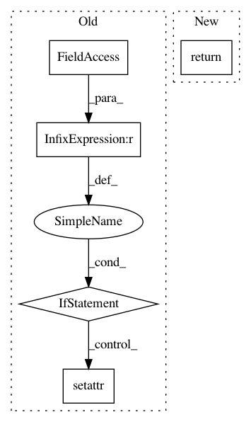

c073de4002f7a72babc8fd6ecdcd90c141be2c08,Orange/widgets/utils/datacaching.py,,getCached,#Any#Any#Any#Any#,3
Before Change
def getCached(data, funct, params = (), kwparams = {}):
if not data: return None
if getattr(data, "info", None) == None or data.info["__version__"] != data.version:
setattr(data, "info", {"__version__": data.version})
if data.info.has_key(funct):
return data.info[funct]
else:
if type(funct) != str:
After Change
if kwparams is None:
kwparams = {}
info[funct] = res = funct(*params, **kwparams)
return res
def setCached(data, name, value):
if data is None:
In pattern: SUPERPATTERN
Frequency: 3
Non-data size: 5
Instances
Project Name: biolab/orange3
Commit Name: c073de4002f7a72babc8fd6ecdcd90c141be2c08
Time: 2013-01-21
Author: janez.demsar@fri.uni-lj.si
File Name: Orange/widgets/utils/datacaching.py
Class Name:
Method Name: getCached
Project Name: snorkel-team/snorkel
Commit Name: c9dc97f87ef7eab74e6322af68e5d8c1a9236234
Time: 2019-08-13
Author: henry.ehrenberg@outlook.com
File Name: snorkel/map/core.py
Class Name: Mapper
Method Name: _generate_mapped_data_point
Project Name: vatlab/SoS
Commit Name: b055391ca6c162d2902f8306b74f8d0633a2fee8
Time: 2017-01-28
Author: bpeng@mdanderson.org
File Name: sos/sos_step.py
Class Name: Queued_Step_Executor
Method Name: run